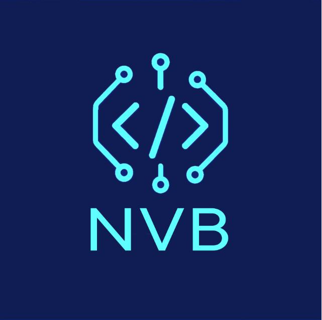
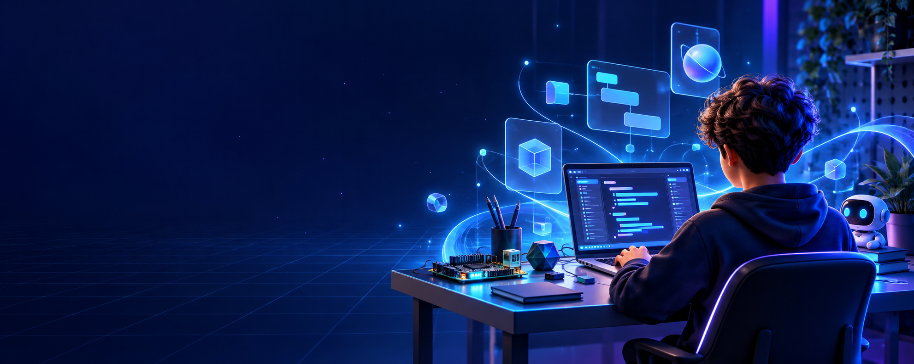

⌘
Învățăm făcând
De la primul tag HTML la un site complet: fiecare sesiune se termină cu ceva creat de tine.

NVB Alătură-te ↗CLUB DE TEHNOLOGIE PENTRU ELEVI
NVB este locul în care învățăm programare, explorăm tehnologii noi și dăm viață proiectelor de care suntem mândri.

DE CE NVB?
Credem că cele mai bune lucruri pornesc dintr-o întrebare simplă: „Oare pot să fac asta?” Aici ai spațiul, oamenii și provocările potrivite pentru a afla răspunsul.
De la primul tag HTML la un site complet: fiecare sesiune se termină cu ceva creat de tine.
Întrebările sunt binevenite. Ideile se dezvoltă mai repede când le împărtășim.
Experimentăm, greșim, iterăm. Așa se nasc proiectele care chiar contează.
TRASEUL TĂU
Începem simplu. Apoi adăugăm, testăm și ne depășim limitele — pas cu pas.
HTML · CSS · design responsiv
JavaScript · animații · UX
PHP · echipă · portofoliu
CE URMEAZĂ
Idei care așteaptă să fie dezvoltate de următoarea generație NVB.
Un loc digital făcut chiar de noi.
Explorăm împreună →HAI SĂ ÎNCEPEM
Nu trebuie să știi totul ca să începi. Trebuie doar să fii curios.